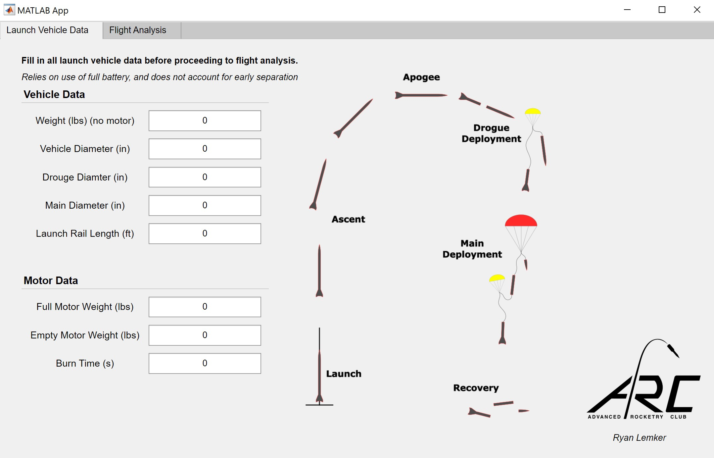
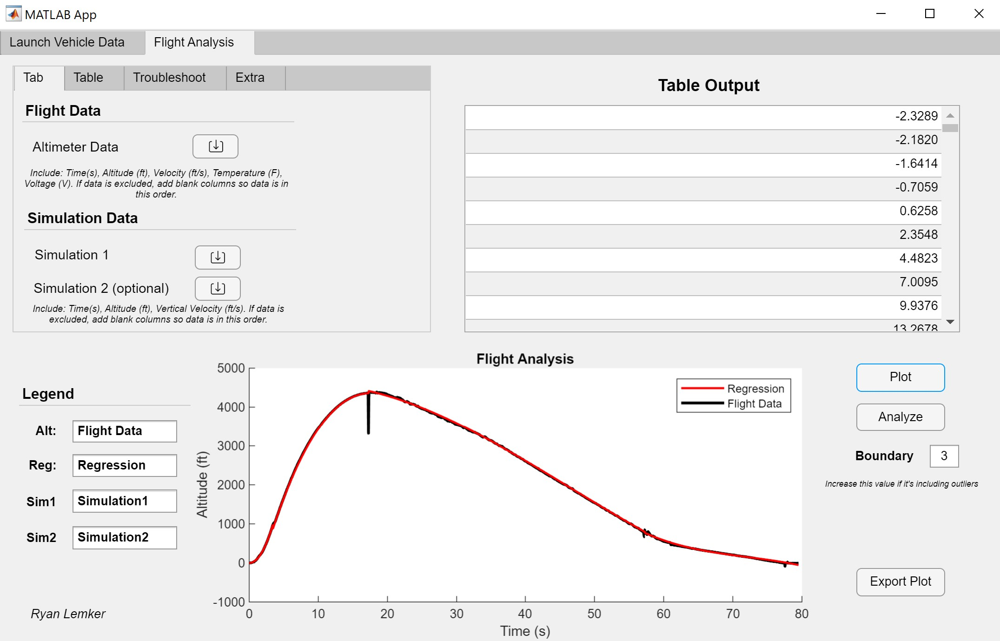

I created this app in Matlab for the Advanced Rocketry Club at my university. I thought of creating the app mostly for helping to pass on knowledge and processes to new members. Originally, I was the one on the team that would do the post-flight analysis, and I wanted there to be a tool to make the process much faster. I used to switch back and forth constantly between Excel, Matlab, and python scripts to convert files, manually find key events (apogee, main deployment), perform regression analysis and find average values, and plotting. To make this easier, I consolidated it into this Matlab app with a graphic user interface.

The app does all of the operations described above automatically, but still allows manual input to help correct for anomalies. The app allows the user to input the basic rocket information (shown in the first image above) before importing the altimeter flight profile and simulation data. From there, the app automatically finds the key events and performs a regression analysis, allowing the user to adjust the degree of poly. More features appear after certain calculations have been performed. For example, after the regression is complete, the 'Analyze' button will appear which will calculate the drag coefficients for the launch vehicle, drogue parachute, and main parachute. When replacing these values in the simulations, the flight profiles are nearly identical. Additionally, the app allows the user to adjust what information is plotted as well as the labels before exporting as an image.